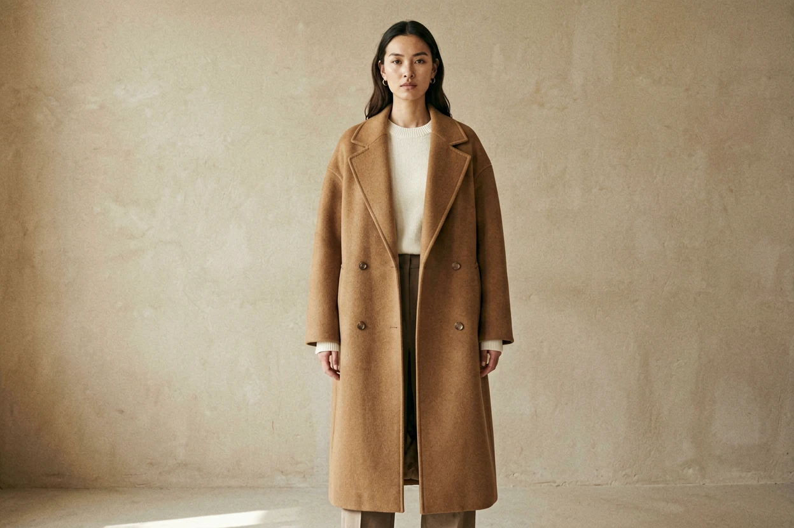

Our philosophy
A wardrobe built to last a decade, not a season.
Aveline began with a quiet frustration: a wardrobe full of clothes, and nothing worth keeping. We set out to make the opposite — a small, considered edit of pieces cut from natural fibres, designed to be worn together and to soften, not wear out, with time.
Everything is made in limited runs by ateliers we know by name, in mills we visit ourselves. No logos, no trend cycles, no noise — just clothes that hold their shape and their place in your life.
